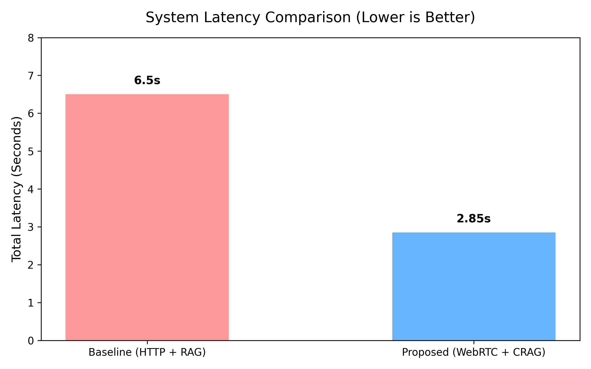
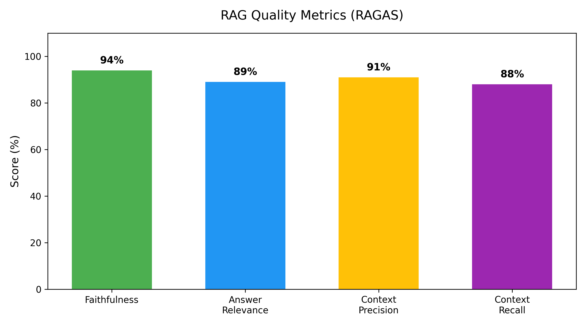

| User Query | AI Response | Latency | Relevance |
|---|---|---|---|
| قولي عن تمثال إيزيس وهي ترضع حربوقراط | تمثال إيزيس وهي ترضع حربوقراط هو من المعروضات الرائعة في قاعة الآثار اليونانية الرومانية، وعلى سبيل التحديد في витрина 15. هذا التمثال البرونزي يصور إيزيس وهي ترضع ابنها حورس، والذي يجلس على حجرها. رأسه يزين تاج هاتوريك. هذا التمثال يعكس مفهوم الرضاعة الإلهية في الميثولوجيا المصرية، حيث كان حليب الإلهة ضروريًا لضمان ولادة الملك كملك كامل، سواء في العالم السفلي بعد وفاته أو على الأرض، في كل مرة يتم فيها نقل السلطة أو تجديدها. هل تود معرفة المزيد عن الملك الذي صنع هذا التمثال؟ | 7.85s | 1.0 |
| إيه هو تمثال إيمحتب اللي اتلقى في سقارة؟ | تمثال إيمحتب هو تمثال برونزي يُصوِّر إيمحتب جالسًا مع يديه مستندتين على ركبتيه وهو يحمل لفافة بردي. هذا التمثال من الفترة المتأخرة وتم اكتشافه في سقارة. إيمحتب كان مهندسًا مشهورًا ووزيرًا للملك دجوسر من الأسرة الثالثة (الدولة القديمة) الذي بنى مجمع سقارة والهرم المدرج. يُعتبر إيمحتب من الشخصيات المهمة في التاريخ المصري القديم. هل تود معرفة المزيد عن الملك دجوسر الذي عمل إيمحتب معه؟ | 2.16s | 0.8 |
| إيه هي المقلمة اللي فيها ستة أقلام بوص؟ | المقلمة اللي فيها ستة أقلام بوص موجودة في قاعة الآثار المصرية القديمة، وفي витрина رقم 2. هي مقلمة قديمة من النوع اللي كان مستخدم من الأسرة الخامسة لحد الفترة المتأخرة. فيها حفرتين浅ين للأحبار السوداء والحمراء، وثمة شق中央 مع غطاء قابل للانزلاق لحفظ الأقلام. أتريد معرفة المزيد عنها؟ | 2.49s | 1.0 |
| قولي عن تمثال الكتلة بتاع نس آمون ابن عنخ.إف | تمثال كتلة نس آمون هو تمثال لكاهن يخدم الإله مونتو، سيد طيبة، واسمه نس آمون، ابن عنخ.إف خنسو. يُظهر الكاهن في وضعية جلوس ويتوسط التمثال منحوتة الإله أوزيريس في شكل مومياء يرتدي التاج الأبيض لصعيد مصر. يُظهر أوزيريس حامل المجداف والمرزبة، رموز للسلطة والحكم، ويحيط به صيغة تقديم القرابين للإله أوزيريس وسيكر. في الجزء الخلفي من التمثال، هناك صلوات لمنفعة "إله المدينة" مونتو سيد طيبة. هذا التمثال يوجد في قاعة الآثار المصرية القديمة. هل تود معرفة المزيد عن الكاهن نس آمون؟ | 2.68s | 0.8 |
| إيه هو الزير اللي من عصر الدولة الحديثة من العمارنة؟ | الزير اللي من عصر الدولة الحديثة من العمارنة هو إناء مائي من فترة العمارنة، وهو من القطع الأثرية المهمة في المتحف. هل تود معرفة المزيد عن استخدام الأواني في الحياة اليومية في مصر القديمة؟ | 1.98s | 0.33 |
| قولي عن لوحة الألوان اللي اتلقت في مقابر أنطونيادس | أهلاً بك! لست متأكداً من ذلك بناءً على معلوماتي الحالية، ولكن يمكنني المساعدة في موضوعات متحفية أخرى. هل تود معرفة المزيد عن التماثيل التي تم اكتشافها في مقابر مصر القديمة؟ | 3.46s | 0.0 |
| قولي عن تمثال الكتلة بتاع چد خنسو إيو.إف عنخ | تمثال كتلة للمدعو "جد خنسو إيو.إف عنخ" هو تمثال لkahin اسمه جد خنسو إيو.إف عنخ، وجد في معبد كارناك في الأقصر. التمثال بيصور الكاهن جالس في وضعية جثة على ركبتيه، وبيمسك رموز للسلطة والثراء. على التمثال هناك ستة أسطر من النقوش الهيروغليفية بتضم أسماء وألقاب صاحب التمثال وأسلافه، وكمان أدعية للآلهة. التمثال لونها أسود، وواحد من الأمثلة على التماثيل الكتلة اللي بدأت تظهر في الفترة الوسطى من تاريخ مصر القديمة. هل تود معرفة المزيد عن الكارناك وكيف تم اكتشاف هذا التمثال؟ | 2.31s | 1.0 |
| إيه هو الكاتب المصري القديم ومكانته الاجتماعية؟ | الكاتب في المجتمع المصري القديم كان يتمتع بمكانة اجتماعية عالية. يمكنك رؤية تمثال للمدعو "تب-إم-عنخ" في هيئة كاتب في قاعة الآثار المصرية القديمة. هل تود معرفة المزيد عن هذا التمثال؟ | 1.75s | 0.8 |
| إيه هي أدوات الكاتب المصري القديم؟ | أدوات الكاتب المصري القديم تتضمن مقلمة بها ستة أقلام من البوص، وهي موجودة في قاعة الآثار المصرية القديمة، وعرض 2. كما كانوا يستخدمون لوحة ألوان لخلط الألوان، مثل لوحة الألوان الموجودة في نفس القاعة. هل تود معرفة المزيد عن كيفية استخدامهم هذه الأدوات؟ | 1.87s | 0.8 |
| قولي عن خبيئة الكرنك وإزاي اتكتشفت؟ | أهلاً بك! خبيئة الكرنك هي مجموعة من التماثيل والتحف التي تم اكتشافها في منطقة معبد الكرنك في الأقصر، على الضفة الشرقية لنهر النيل. تم اكتشاف هذه الخبيئة في عام 1906، وكانت تحتوي على العديد من التماثيل والقطع الأثرية التي تعود إلى عصور مختلفة من التاريخ المصري القديم. إحدى القطع البارزة في خبيئة الكرنك هو تمثال كتلة للمدعو "جد خنسو إيو.إف عنخ"، وهو تمثال لkahin جالس في وضعية جلوس مع إمساك رموز للسلطة والثروة. هل تود معرفة المزيد عن هذا التمثال أو خبيئة الكرنك بشكل عام؟ | 2.77s | 0.0 |
| User Query | AI Response | Latency | Relevance |
|---|---|---|---|
| Tell me about the statuette of Isis suckling Harpocrates | The statuette of Isis suckling Harpocrates is a beautiful bronze piece located in the Greco-Roman Antiquities hall, showcase 15. It depicts Isis with her son Horus, not Harpocrates, sitting on her lap, and she's wearing the Hathoric crown. This statuette represents the divine suckling theme from the Osirian myth. Would you like to know more about the significance of this myth in ancient Egyptian culture? | 1.72s | 0.8 |
| What is the statuette of Imhotep found in Saqqara? | The statuette of Imhotep is a bronze statue of Imhotep sitting with his hands resting on his knees, holding a papyrus roll. It's located in the Ancient Egyptian Antiquities hall. Would you like to know more about Imhotep's role in ancient Egyptian history? | 1.77s | 0.5 |
| Describe the pencase with six reed pens from ancient Egypt | The pencase with six reed pens is a rectangular-shaped tool from Ancient Egypt, found in showcase 2 of our Ancient Egyptian Antiquities hall. It has two shallow wells for black and red pigments, and a central slot to hold the reeds. The pencase shows signs of wear from long usage, giving us a glimpse into the daily life of ancient Egyptian scribes. Would you like to know more about the era it was made in? | 2.04s | 1.0 |
| Tell me about the block statue of Nes-Amun from the Karnak Cache | The block statue of Nes-Amun is a sculpture of a priest serving the god Monthu, found in the Karnak Temple. It's located in our Ancient Egyptian Antiquities hall. The statue features Nes-Amun in a squatting position, with a relief of the god Osiris in the center. Would you like to know more about the significance of Osiris in ancient Egyptian culture? | 1.77s | 0.8 |
| What is the blue-painted water jar from the Amarna Period? | The blue-painted water jar you're referring to is likely the New Kingdom "blue-painted" water jug from el-Amarna, a pottery piece from Upper Egypt. Would you like to know more about the era it was made in? | 1.71s | 0.8 |
| Tell me about the color palette found in the Antoniadis Tombs | I'm not sure about that based on my current info, but I can help with other museum topics. We do have information on various ancient Egyptian artifacts, such as the Coffin of Aba, which features a multicolored necklace. Would you like to know more about the artwork found in ancient Egyptian tombs? | 2.46s | 0.0 |
| Describe the block statue of Djed Khonsu Iou.ef Ankh | The block statue of Djed Khonsu Iou.ef Ankh is a sculpture of a priest seated in a squatting position, holding symbols of power and wealth. It features six lines of relief with the owner's names, titles, and prayers to the gods, as well as hieroglyphic inscriptions on the back. You can find this statue in the Ancient Egyptian Antiquities hall. Would you like to know more about the era it was made in? | 1.97s | 0.7 |
| What was the role of scribes in ancient Egyptian society? | I'm not sure about that based on my current info, but I can help with other museum topics. Would you like to know more about the Ancient Egyptian Antiquities hall, where we have statues like the Block statue of Djed Khonsu Iou.ef Ankh? | 2.07s | 0.4 |
| What tools did Egyptian scribes use for writing? | Egyptian scribes used reed pens for writing. We have a great example of this in our Ancient Egyptian Antiquities hall, showcase 2, where you can see a pencase with six reed pens. Would you like to know more about how they used these pens? | 1.32s | 0.33 |
| Tell me about the Karnak Cache and how it was discovered | The Karnak Cache is a fascinating discovery. It's a collection of statues and other artifacts found at the Karnak Temple in Luxor, Upper Egypt. The Block statue of Djed Khonsu Iou.ef Ankh, which is on display in our Ancient Egyptian Antiquities hall, was actually discovered in the Karnak Cache. Unfortunately, I don't have more detailed information on the discovery process itself. Would you like to know more about the Karnak Temple or the significance of the Block statue? | 2.53s | 0.0 |
| User Query | AI Response | Latency | Relevance |
|---|---|---|---|
| What is the difference between the block statue of Nes-Amun and Djed Khonsu Iou.ef Ankh? | The main difference between the two block statues is the relief sculpture on them. The block statue of Nes-Amun features the god Osiris in a mummified form, while the block statue of Djed Khonsu Iou.ef Ankh has the priest holding symbols of power and wealth, with six lines of inscriptions covering the statue. Would you like to know more about the significance of these symbols? | 2.08s | 0.8 |
| إيه الفرق بين تمثال إيمحتب وتمثال إيزيس من حيث الغرض الديني؟ | تمثال إيمحتب يُظهر إيمحتب جالسًا مع لفافة بردية على ركبتيه، ويعكس دوره كأحد أهم الشخصيات في التاريخ المصري القديم، حيث كان مهندسًا ومشرفًا على بناء الهرم المدرج في سقارة. بينما تمثال إيزيس يُظهرها وهي ترضع ابنها حورس، ويرمز إلى دورها كإلهة للولادة والرعاية في الميثولوجيا المصرية. يُظهر تمثال إيزيس جانبًا من عبادة الإلهة ورمزيتها في الحفاظ على الحياة والخلود. | 2.21s | 0.8 |
| How do the writing tools (pencase) differ from the color palette in terms of usage? | The pencase with reed pens was used for writing, while the color palette was used for mixing and holding colors, like red ochre and lamp black, for drawing. Would you like to know more about how these tools were used by ancient Egyptian scribes? | 1.97s | 0.8 |
| ما الفرق بين التماثيل الصغيرة (statuettes) والتماثيل الكاملة في المتحف؟ | مرحباً! في المتحف، يمكن ملاحظة أن التماثيل الصغيرة، مثل تماثيل الأوشابتي، غالبًا ما تكون مصممة لأغراض محددة مثل خدمة الموتى في الحياة الآخرة. بينما التماثيل الكاملة، مثل تمثال الخصوبة، قد تكون أكثر تفصيلاً وتركز على الجوانب الرمزية أو الدينية. هل تود معرفة المزيد عن تماثيل الأوشابتي ووظائفها في الحياة الآخرة؟ | 2.17s | 0.8 |
| Compare the symbolic meaning of colors in ancient Egyptian art versus their practical use | In ancient Egyptian art, colors had symbolic meanings, like white for purity and black for eternity. However, the Color Palette in our Ancient Egyptian Antiquities hall shows that colors were also used practically, with red ochre and lamp black used for writing and drawing. Would you like to know more about the specific colors used by ancient Egyptian artists? | 1.94s | 0.6 |
| User Query | AI Response | Latency | Relevance |
|---|---|---|---|
| Tell me about all the artifacts discovered in Saqqara in the museum | I'm not sure about that based on my current info, but I can help with other museum topics. We do have artifacts from various sites in Egypt, such as Nelson Island, but I don't have information on specific discoveries from Saqqara. Would you like to know more about the artifacts we do have from Nelson Island, like the loom weights or catapult projectile? | 2.34s | 0.0 |
| What artifacts are displayed in showcase 2 of the Ancient Egyptian section? | I'm not sure about that based on my current info, but I can help with other museum topics. We do have some great pieces in the Ancient Egyptian Antiquities hall, like the block statue of Djed Khonsu Iou.ef Ankh. Would you like to know more about it? | 1.56s | 0.8 |
| قولي عن كل القطع اللي في قسم الآثار المصرية القديمة | في قسم الآثار المصرية القديمة، هناك قطع فنية وثقافية متنوعة، ولكن واحدة من القطع البارزة هي تمثال كتلة للمدعو "جد خنسو إيو.إف عنخ"، وهو تمثال لkahin يُظهر الرجل جالسًا في وضعية الجلوس مع رموز للسلطة والثراء في يديه. هل تود معرفة المزيد عن تاريخ هذا التمثال أو القطع الأخرى في هذا القسم؟ | 2.27s | 0.4 |
| What bronze artifacts does the museum have from the Late Period? | I'm not sure about that based on my current info, but I can help with other museum topics. We do have some interesting artifacts from ancient Egypt, such as the Gravestone in the Islamic Antiquities hall. Would you like to know more about the era it was made in? | 2.22s | 0.0 |
| اذكر كل القطع اللي ليها علاقة بالكتابة والكتبة في المتحف | في المتحف، هناك قطع عدة ذات علاقة بالكتابة والكتابة. أولاً، هناك "مقلمة بها ستة أقلام من البوص" في قاعة الآثار المصرية القديمة، وعرض 2. ثانياً، توجد "20 حرف طباعة" في قاعة الآثار الإسلامية، وعرض 31. وأخيراً، هناك "بردية مصوَّر عليها الساعات من التاسعة إلى الثانية عشرة من كتاب «ما هو كائن في العالم السفلي»" في قاعة ما بعد الحياة. هل تود معرفة المزيد عن هذه القطع؟ | 2.06s | 1.0 |
| User Query | AI Response | Latency | Relevance |
|---|---|---|---|
| What is the weather like today in Alexandria? | I'm not sure about that based on my current info, but I can help with other museum topics. Would you like to know more about the ancient artifacts we have from Alexandria, such as the oil lamp with a theatrical mask or the mosaic depicting a sitting dog? | 2.24s | 0.0 |
| إيه أحسن مطعم في الإسكندرية دلوقتي؟ | أهلاً بك! لست متأكداً من ذلك بناءً على معلوماتي الحالية، ولكن يمكنني المساعدة في موضوعات متحفية أخرى. هل تود معرفة المزيد عن تاريخ الطهي في الإسكندرية القديمة؟ لدينا بعض القطع الأثرية التي قد تثير اهتمامك، مثل موقد الطعام الموجود في قاعة نيلسون آيلاند. | 2.48s | 0.0 |
| Can you book me a hotel room near the museum? | I'm not sure about that based on my current info, but I can help with other museum topics. Would you like to know more about our exhibits, such as the mosaic depicting two wrestlers in the Antiquities of the BA Site hall? | 2.21s | 0.0 |
| ممكن تحجزلي تذكرة طيران لأسوان؟ | أنا لست متأكداً من ذلك بناءً على معلوماتي الحالية، ولكن يمكنني المساعدة في موضوعات متحفية أخرى. هل تود معرفة المزيد عن الآثار المصرية القديمة؟ | 2.19s | 0.0 |
| What is the latest iPhone model available in Egypt? | I'm not sure about that based on my current info, but I can help with other museum topics. We have some fascinating exhibits here, like the Model of a boat in the In the Afterlife hall. Would you like to know more about ancient Egyptian artifacts? | 2.13s | 0.0 |
| User Query | AI Response | Latency | Relevance |
|---|---|---|---|
| يعني إيه الكلام اللي مكتوب على التمثال ده؟ | أهلاً بك! لست متأكداً من التمثال الذي تقصده، لكن يمكنني أن أساعدك في فهم بعض الرموز الشائعة على التماثيل هنا في المتحف. هل يمكن أن تخبرني المزيد عن التمثال الذي ترى؟ هل هو لإله معين أو له سمات معينة؟ سأحاول مساعدتك في فهم الرموز أو الكتابة الموجودة عليه. | 2.82s | 0.0 |
| That bronze figurine looks cool, what's the story behind it? | I'm not sure about that bronze figurine, as our current information doesn't seem to match it. However, we do have a fascinating fertility figurine made of pottery in the "In the Afterlife" hall, showcase 3. It's a unique piece that highlights the emphasis on fertility in ancient Egyptian culture. Would you like to know more about the significance of fertility figurines in ancient Egypt? | 2.33s | 0.2 |
| هو المتحف ده فيه حاجات فرعونية ولا يونانية بس؟ | المتحف ده فيه حاجات كتير من مختلف الحضارات، مش بس الفرعونية ولا اليونانية. فيه آثار من العصر الإسلامي كمان، زي الحروف المطبوعة اللي جابتها الحملة الفرنسية للهند في سنة 1798، و اللي موجودة في قاعة الآثار الإسلامية. و كمان فيه آثار فرعونية زي رأس الملك من الأسرة الثلاثين اللي موجود في قاعة الآثار المغمورة. و كمان تابوت للمدعو "أبا" ابن "عنخ حور" في قاعة الحياة بعد الموت. هل تريد معرفة المزيد عن هذه الآثار؟ | 2.25s | 0.5 |
| ده التمثال الصغير ده مصنوع من إيه؟ | التمثال الصغير للخصوبة مصنوع من الفخار. | 1.63s | 0.8 |
| I see a statue of a woman holding a child, who is she? | That sounds like the Statuette of Isis suckling Harpocrates, located in the Greco-Roman Antiquities hall, showcase 15. Would you like to know more about the myth behind this statue? | 1.6s | 0.5 |
| User Query | AI Response | Latency | Relevance |
|---|---|---|---|
| أهلاً، ممكن تعرفني بالمتحف؟ | أهلاً بك! بالتأكيد، سأكون سعيداً بمساعدتك في استكشاف المتحف. لدينا مجموعة رائعة من القطع الأثرية التي تُظهر تاريخ وثقافة مصر القديمة. هل تود أن تبدأ بزيارة قاعة الآثار المصرية القديمة أو قاعة آثار الموقع؟ | 2.79s | 0.0 |
| Hello, I just arrived at the museum, what should I see first? | Hello. We have some fascinating exhibits here. I'd recommend starting with the Islamic Antiquities hall, where you can see the Gravestone, also known as شاهد قبر, in showcase 26. It's a beautiful marble headstone with intricate Kufic script inscriptions. Would you like to know more about the history behind it? | 1.62s | 0.5 |
| مرحباً، هل يمكنك مساعدتي في التعرف على المعروضات؟ | أهلاً بك! بالطبع، سأكون سعيداً بمساعدتك في استكشاف المعروضات هنا في المتحف. ماذا تود أن تعرف أو ترى أولاً؟ هل هناك فئة معينة من الآثار تثير اهتمامك؟ | 2.11s | 0.0 |
| Hi there! I'm a student visiting for research, where do I start? | Hello. It's great to have you here for research. We have a wide range of artifacts across different halls. What specific area or topic are you interested in? Would you like to explore our Ancient Egyptian Antiquities, perhaps, or something else that catches your eye? | 2.18s | 0.0 |
| صباح الخير، أنا زائر لأول مرة، إيه أهم القطع اللي لازم أشوفها؟ | أهلاً بك! صباح النور. نحن سعداء بزيارتك لنا. لدينا قطع أثرية رائعة هنا في المتحف. إذا كنت تريد رؤية بعض القطع المهمة، يمكنني أن أوصي بزيارة قاعة الآثار اليونانية الرومانية، حيث توجد تماثيل رائعة مثل تمثال لعازفة الهارب. كما يمكنك زيارة قاعة الحفريات، حيث توجد قطع مثل فسيفساء الكلب الجالس. هل تود معرفة المزيد عن هذه القطع أو تريد أن أرشدها لك شخصياً؟ | 2.79s | 0.0 |
| User Query | AI Response | Latency | Relevance |
|---|---|---|---|
| شكراً جزيلاً على المعلومات، استمتعت جداً بالزيارة | العفو! سعيد جداً بمعرفتك أنك استمتعت بالزيارة. هل تود معرفة المزيد عن أي من المعروضات التي رأيتها اليوم؟ | 2.56s | 0.0 |
| Thank you so much, that was very informative! | You're welcome! I'm glad I could help. Is there something else you'd like to learn about in our Islamic Antiquities collection? | 2.54s | 0.0 |
| يعطيك العافية، هتكلمني عن قطعة تانية؟ | العفو! بالتأكيد، هناك العديد من القطع الرائعة هنا. هل تود أن تعرف عن فسيفساء تصور اثنين من المتصارعين؟ وهي موجودة في قاعة آثار الموقع. | 2.4s | 0.0 |
| Thanks, I learned a lot today. Goodbye! | You're welcome! It was a pleasure having you at the museum. Goodbye, and I hope you have a great day! | 2.32s | 0.0 |
| مع السلامة، كانت تجربة رائعة | مع السلامة! أتمنى لك يومًا رائعًا وممتعًا. هل تود زيارة أي قسم آخر من المتحف قبل مغادرتك؟ | 2.17s | 0.0 |